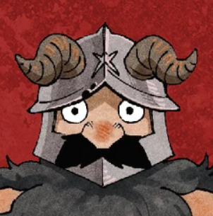

About

Delicious in Diner was founded by our very own Chef Senshi. He has been serving up delicious meals to adventurers since 2014. His passion for both cooking and the dungeon has inspired the great menu of alternative ingredient meals and BYOI services. All our ingredients are sourced from local adventurers and the menu is pre-approved by his trusty party of mixed characters to appeal to the wider community.
Location
123 Stomach Rumbling,
Mouth Drooling,
Nose twitching,
E4T N0W
Hours
We're now open 24/7, all day, every day!
Contact
Please send inquires via letter to Chef Senshi.